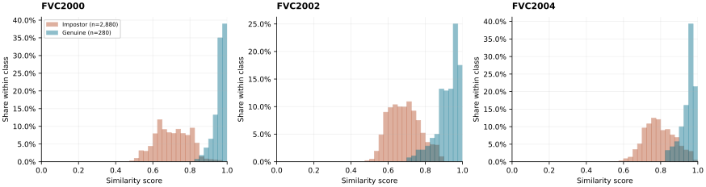
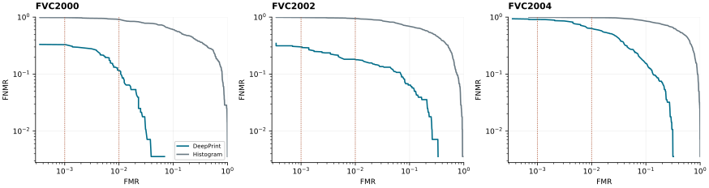
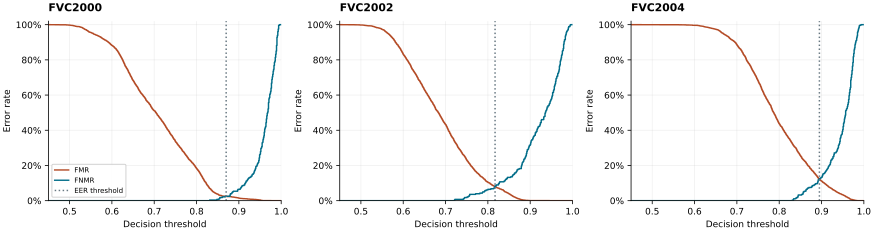

지문 인식 성능평가 보고서
실험 조건
원본 DeepPrint EER은 FVC2000 / FVC2002 / FVC2004 순으로 2.50% / 7.99% / 12.27%입니다. 세 DB에서 히스토그램 기준선보다 낮았습니다. 낮은 오수락률이 요구될 때는 아래 FMR100·FMR1000에서 본인 거부 비용을 확인할 수 있습니다.
- DB별 손가락 10개, 손가락당 촬영 8장으로 총 80장을 사용했습니다. 한 장으로 등록 템플릿을 만들고, DB 안에서 동일 파일을 제외한 무방향 쌍을 한 번씩 비교했습니다. DB별 본인 280쌍과 타인 2,880쌍입니다.
- 손가락과 촬영 번호로 정렬해 한쪽을 등록, 다른 쪽을 비교에 사용했습니다. 이 보고서의 실행은 고정 순서입니다. 과제 4쪽의 무작위 실행 순서와 timeout·crash 강제 검출 기능은 이 실측 범위 밖입니다.
- 원본 등록은 고정하고 비교 영상에만 가우시안 노이즈를 적용했습니다. 강도는 8비트 픽셀 기준 σ = 0, 2, 5, 10입니다. DeepPrint는 시드 42·43, 히스토그램은 시드 42로 같은 쌍을 평가했습니다. 각 실행은 DB와 강도를 합쳐 37,920건입니다.
- 과제의 FVC2002 DB3_B는 작업 폴더에서
FVC2002_DB2_B로 저장돼 있습니다. 포함된 원본 ZIP의 TIFF 80장과 내용이 일치하는 것을 확인했습니다. 세 DB의iType은 각각 1, 2, 3입니다.
지표 정의와 계산 방식
점수 s ≥ t이면 일치로 판정합니다. NG와 NI는 사전에 정한 본인·타인 쌍의 수입니다. 운영점은 DLL의 0.001 점수 해상도에서 계산했습니다. 1.001은 모든 점수를 거부하는 경계값입니다.
| 지표 | 계산과 해석 |
|---|---|
| FTE | 등록 실패 영상 수 ÷ 등록 시도 영상 수. 측정 로그의 실패·timeout·crash 건수를 함께 판단합니다. |
| REJ genuine / impostor | 실제로 시도한 본인 또는 타인 매칭 중 처리에 실패한 비율입니다. 비교용 특징 추출 또는 점수 계산 실패를 포함하고, 등록 실패로 시도하지 못한 쌍은 분모에서 제외합니다. 임계값 때문에 거부된 유효 비교는 FNMR에 반영합니다. |
| FMR(t) | 타인인데 s ≥ t인 쌍 ÷ NI. 높을수록 다른 손가락을 받아들일 가능성이 큽니다. |
| FNMR(t) | (등록 실패로 처리하지 못한 본인 쌍 + 매칭 실패 본인 쌍 + s < t인 유효 본인 쌍) ÷ NG. 높을수록 같은 손가락의 정상 사용이 거부됩니다. |
| EER / EER* | 두 오류율이 같은 관측 임계값이 있으면 그 값을 사용합니다. 교차점 양쪽 후보 t₁·t₂에서는 과제 8쪽에 따라 (FMR + FNMR)/2가 더 작은 값을 선택합니다. EER*은 성공 점수만으로 분자·분모를 계산합니다. 이번 원시 로그에는 실패가 없어 두 값이 일치합니다. 기존 요약 CSV의 선형보간 EER과는 차이가 날 수 있습니다. |
| ZeroFMR / ZeroFNMR | ZeroFMR은 FMR=0인 임계값에서 가장 낮은 FNMR입니다. ZeroFNMR은 FNMR=0인 임계값에서 가장 낮은 FMR입니다. 표의 값은 각각 관측 오수락 0건 또는 관측 본인 거부 0건을 만들 때 발생한 반대쪽 오류입니다. |
| FMR100 / FMR1000 | 각각 FMR≤1%, FMR≤0.1%일 때 가장 낮은 FNMR입니다. 타인 2,880쌍에서 허용되는 오수락은 각각 최대 28건 및 2건입니다. |
| 등록·매칭 시간 | 등록 시간은 KISA_Enroll의 평균입니다. 매칭 시간은 쌍의 비교용 특징 추출 시간(KISA_Attempt)과 비교 시간(KISA_Compare)의 합을 전체·본인·타인별로 평균한 값입니다. 추출 템플릿 캐시를 사용해 쌍별 재호출 비용은 한 번 측정한 비교 영상 값을 재사용해 산정했습니다. |
| 템플릿 크기 | 성공한 KISA_Enroll 호출이 반환한 템플릿 바이트 수의 평균과 최댓값입니다. 디스크 컨테이너나 별도 파일 메타데이터는 제외한 값입니다. |
원본 영상 인식 성능
| DB | 알고리즘 | EER | EER* | 선택 t | FMR(t) | FNMR(t) | ZeroFMR | ZeroFNMR | FMR100 | FMR1000 |
|---|---|---|---|---|---|---|---|---|---|---|
| FVC2000 | DeepPrint | 2.50% | 2.50% | 0.870 | 2.50% | 2.50% | 34.64% | 7.12% | 11.79% | 33.21% |
| FVC2000 | 히스토그램 | 34.86% | 34.86% | 0.680 | 34.72% | 35.00% | 99.64% | 99.69% | 91.79% | 98.57% |
| FVC2002 | DeepPrint | 7.99% | 7.99% | 0.817 | 8.12% | 7.86% | 34.64% | 34.10% | 18.21% | 30.71% |
| FVC2002 | 히스토그램 | 39.12% | 39.12% | 0.798 | 38.96% | 39.29% | 100.00% | 96.15% | 95.00% | 99.29% |
| FVC2004 | DeepPrint | 12.27% | 12.27% | 0.895 | 12.40% | 12.14% | 95.71% | 32.67% | 64.29% | 91.07% |
| FVC2004 | 히스토그램 | 49.73% | 49.73% | 0.910 | 48.75% | 50.71% | 100.00% | 99.97% | 98.57% | 99.64% |
선택 t는 과제식 EER에 사용한 임계값이며, 그 위치의 FMR·FNMR은 서로 다를 수 있습니다. EER은 이 두 값의 평균입니다. ZeroFMR·FMR100·FMR1000 열은 FNMR, ZeroFNMR 열은 FMR을 나타냅니다.
| DB | 알고리즘 | EER t₁ | EER t₂ | ZeroFMR t | ZeroFNMR t | FMR100 t | FMR1000 t | FMR1000 오수락 수 |
|---|---|---|---|---|---|---|---|---|
| FVC2000 | DeepPrint | 0.870 | 0.870 | 0.958 | 0.831 | 0.921 | 0.957 | 1/2,880 |
| FVC2000 | 히스토그램 | 0.678 | 0.680 | 0.981 | 0.304 | 0.938 | 0.970 | 2/2,880 |
| FVC2002 | DeepPrint | 0.817 | 0.818 | 0.906 | 0.721 | 0.875 | 0.898 | 2/2,880 |
| FVC2002 | 히스토그램 | 0.796 | 0.798 | 0.979 | 0.490 | 0.948 | 0.970 | 1/2,880 |
| FVC2004 | DeepPrint | 0.895 | 0.896 | 0.986 | 0.831 | 0.969 | 0.983 | 2/2,880 |
| FVC2004 | 히스토그램 | 0.908 | 0.910 | 0.999 | 0.698 | 0.989 | 0.995 | 2/2,880 |
처리 실패, 시간, 템플릿 크기
| DB | 알고리즘 | FTE | REJ genuine | REJ impostor | 비교 특징 추출 실패(장) | KISA_Compare 실패(쌍) |
|---|---|---|---|---|---|---|
| FVC2000 | DeepPrint | 0/80 (0.00%) | 0/280 (0.00%) | 0/2880 (0.00%) | 0 | 0 |
| FVC2000 | 히스토그램 | 0/80 (0.00%) | 0/280 (0.00%) | 0/2880 (0.00%) | 0 | 0 |
| FVC2002 | DeepPrint | 0/80 (0.00%) | 0/280 (0.00%) | 0/2880 (0.00%) | 0 | 0 |
| FVC2002 | 히스토그램 | 0/80 (0.00%) | 0/280 (0.00%) | 0/2880 (0.00%) | 0 | 0 |
| FVC2004 | DeepPrint | 0/80 (0.00%) | 0/280 (0.00%) | 0/2880 (0.00%) | 0 | 0 |
| FVC2004 | 히스토그램 | 0/80 (0.00%) | 0/280 (0.00%) | 0/2880 (0.00%) | 0 | 0 |
원본 및 노이즈 조건의 비교 로그에 등록·비교용 추출·점수 계산 실패가 기록되지 않았습니다. 위 원본 표는 각 DB와 알고리즘별로 등록 이미지 80장과 본인·타인 비교 시도 건수를 분모로 표시합니다.
| DB | 알고리즘 | 등록 평균 | 비교 특징 추출 평균 | 매칭 전체 | 매칭 본인 | 매칭 타인 | Compare 전체 | Compare 본인 | Compare 타인 | 평균 B | 최대 B |
|---|---|---|---|---|---|---|---|---|---|---|---|
| FVC2000 | DeepPrint | 155.389 | 155.068 | 155.817 | 155.831 | 155.816 | 0.001396 | 0.001399 | 0.001396 | 2056 | 2056 |
| FVC2000 | 히스토그램 | 0.169 | 0.168 | 0.170 | 0.164 | 0.171 | 0.000057 | 0.000070 | 0.000055 | 16 | 16 |
| FVC2002 | DeepPrint | 178.195 | 190.687 | 182.407 | 190.709 | 181.600 | 0.001500 | 0.001500 | 0.001500 | 2056 | 2056 |
| FVC2002 | 히스토그램 | 0.089 | 0.087 | 0.088 | 0.088 | 0.088 | 0.000063 | 0.000165 | 0.000053 | 16 | 16 |
| FVC2004 | DeepPrint | 165.686 | 156.414 | 158.067 | 157.406 | 158.131 | 0.001465 | 0.001492 | 0.001463 | 2056 | 2056 |
| FVC2004 | 히스토그램 | 0.192 | 0.192 | 0.191 | 0.193 | 0.191 | 0.000057 | 0.000068 | 0.000056 | 16 | 16 |
원본 조건에서 Windows CPU로 재계측했습니다. DLL을 먼저 한 번 예열하고 std::chrono::steady_clock으로 DLL 함수 호출만 측정했습니다. TIFF 디코딩과 초기 모델 로드는 측정 범위 밖입니다. Compare 열은 벡터 점수 계산만 보여주므로, 한 장을 새로 받았을 때의 비용은 비교 특징 추출을 포함한 매칭 열로 판단해야 합니다.
가우시안 노이즈 내성
| DB | σ | DeepPrint 42 | DeepPrint 43 | 히스토그램 42 | DeepPrint 평균 − 원본 |
|---|---|---|---|---|---|
| FVC2000 | 0 | 2.50% | 2.50% | 34.86% | +0.00 %p |
| FVC2000 | 2 | 2.32% | 2.30% | 35.70% | -0.19 %p |
| FVC2000 | 5 | 2.32% | 2.29% | 35.44% | -0.20 %p |
| FVC2000 | 10 | 2.50% | 2.32% | 36.51% | -0.09 %p |
| FVC2002 | 0 | 7.99% | 7.99% | 39.12% | +0.00 %p |
| FVC2002 | 2 | 8.04% | 8.56% | 39.24% | +0.31 %p |
| FVC2002 | 5 | 9.06% | 9.49% | 39.18% | +1.28 %p |
| FVC2002 | 10 | 9.72% | 9.47% | 39.20% | +1.60 %p |
| FVC2004 | 0 | 12.27% | 12.27% | 49.73% | +0.00 %p |
| FVC2004 | 2 | 12.27% | 12.27% | 49.87% | +0.00 %p |
| FVC2004 | 5 | 12.23% | 12.30% | 49.84% | +0.00 %p |
| FVC2004 | 10 | 12.11% | 12.30% | 49.20% | -0.06 %p |
DeepPrint의 두 시드 결과는 촬영 노이즈를 가정한 반복 실험입니다. 평균 변화는 동일 DB의 원본 EER 대비 백분율포인트 차이입니다. 이번 평가는 공개 사전학습 가중치로 수행했습니다.
원본 영상 그래프



종합 해석과 한계
- 인식과 운영 임계값. DeepPrint는 원본 세 DB에서 균형 오류율을 낮췄습니다. 가장 큰 제약은 FVC2004입니다. EER은 12.27%이지만, 오수락을 0.1% 이하로 제한하면 본인 거부율이 91.07%입니다. 이 조건에서 FVC2000과 FVC2002의 본인 거부율은 각각 33.21%, 30.71%입니다. ZeroFMR은 이 표본에서 관측한 오수락 0건을 뜻합니다.
- 노이즈 영향. σ=10에서 FVC2002의 DeepPrint EER 상승이 두 시드 모두에서 나타났습니다. FVC2000과 FVC2004의 변화는 상대적으로 작았습니다. FVC2004의 작은 하락은 이 표본과 노이즈 시드의 변동으로 해석합니다.
- 실행 비용. DeepPrint의 매칭 평균은 DB별 약 156~182 ms이며 대부분이 특징 추출 시간입니다. 이미 만든 템플릿끼리 점수를 계산하는 데는 평균 약 1.4~1.5 μs가 걸렸습니다. 등록 템플릿은 DeepPrint 2,056바이트, 히스토그램 16바이트였습니다.
- 표본 범위. DB당 10개 손가락을 반복 비교하므로 쌍은 서로 통계적으로 독립적이지 않습니다. 타인 한 건이 약 0.0347%p를 차지합니다. 관측 오류율과 두 노이즈 시드는 이 사전학습 모델과 현재 FVC 표본에 대한 결과입니다.
근거 자료
- 과제 PDF 5쪽의 조합·HTML 및 벡터 그래프 요구, 7~9쪽의 지표 정의, 10쪽의 그래프 예시
- DeepPrint 시드 42 원시 점수 · 시드 43 원시 점수 · 히스토그램 시드 42 원시 점수
- 원본 재계측 DeepPrint 시간·크기 CSV · 히스토그램 시간·크기 CSV